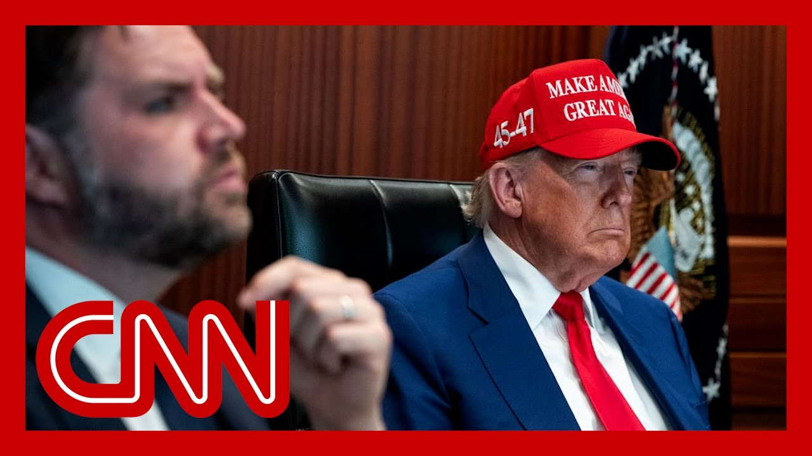

【特朗普：以色列和伊朗"完全同意"停火】
Summary: The President announced on Truth Social that Israel and Iran have fully agreed to a ceasefire starting in six hours, though details remain unclear amid ongoing strikes and negotiations over Iran's nuclear program.
摘要： 总统在Truth Social上宣布以色列和伊朗已完全同意六小时后全面停火，但在持续空袭和伊朗核计划谈判中，具体细节尚不明确。

⏱️ Estimated Reading Time: 12 min
📚 六级生词 📚 雅思生词 📚 托福生词 📚 专八生词 📚 SAT生词 📚 考研生词 📚 GRE生词 📚 高考生词
Farid, as is often the case in our current news cycles, as you were talking, the President just posted on Truth Social moments ago, saying, quote, a ceasefire has been, quote, fully agreed to by Israel and Iran.
法里德，正如当前新闻周期常见的情况，就在你说话时，总统刚刚在Truth Social上发文称，以色列和伊朗"完全同意"停火。
There will be a complete and total ceasefire six hours from now.
六小时后将实现全面彻底停火。
Again, this just happened.
此事刚刚发生。
I don't want to spring this on you.
我不想突然抛出这个消息。
And we're trying to figure out exactly what it means.
我们正在试图弄清其确切含义。
It's a rather lengthy post on Truth Social.
这是Truth Social上一篇相当长的帖子。
Again, we had been reporting, Clarissa, and I were just discussing that there were warnings about strikes in Tehran.
此前我们报道过，克拉丽莎和我刚讨论过关于德黑兰可能遭袭的警告。
There have been strikes throughout the course of the day.
今天全天都有空袭发生。
What do you think this means?
你认为这意味着什么？
Well it follows exactly what I was saying.
这正印证了我刚才的说法。
Trump is now clearly trying to transition from warmaker to peacemaker.
特朗普显然正试图从战争制造者转向和平调解者。
And he's used his considerable influence with Bibine Netanyahu.
他动用了对内塔尼亚胡的巨大影响力。
Let's remember the Israelis also did massive damage.
别忘了以色列也造成了巨大破坏。
I would argue the Israeli strikes were probably more significant in setting back the Iranian program than even the American strikes, because they got to 20 of the top scientists, 20 of the top military officials, degraded almost every facility, destroyed Iran's air defenses.
我认为以色列的空袭对伊朗计划的打击甚至比美国空袭更重要，因为他们击中了20名顶级科学家和20名高级军官，几乎摧毁所有设施，还破坏了伊朗的防空系统。
So Israel feels like it can stop.
因此以色列认为可以停手了。
Trump wants to move into a peacemaking role.
特朗普希望转向调解者角色。
He wants it to stop.
他希望冲突停止。
The Iranians obviously have no, I mean, it's only good for them because they have not been able to really respond in any sense to Israel's humbling attacks because they don't have much capacity.
伊朗显然无力——我是说停火对他们有利，因为他们根本没有能力对以色列的羞辱性攻击做出实质回应。
But then the question becomes, what do those negotiations look like?
但问题在于：谈判将如何进行？
The key stumbling block has been this.
关键障碍在于：
President Trump began the negotiations saying Iran could have some enrichment capacity, but it couldn't be the kind that would, that could be weaponized.
特朗普总统最初谈判时表示伊朗可以保留部分浓缩能力，但不能用于武器化。
The Israeli position has been no zero enrichment under any circumstances.
以色列立场是绝不允许任何浓缩活动。
The Iranian position has been we have to have the legal right to enrich, which is our right under the NPT.
伊朗立场则是必须保留浓缩的合法权利，这是《不扩散核武器条约》赋予的权利。
So that's where you have it.
这就是矛盾所在。
Israel and Iran were at complete loggerheads.
以色列和伊朗完全僵持不下。
The U.S. had a middle position.
美国曾持中间立场。
About two weeks ago, Trump moved to the Israeli position.
约两周前，特朗普转向了以色列立场。
So the question is now that he wants to be a peacemaker, is he, is there going to be any give there or do the Iranians feel they're so weak?
现在问题是：既然他想当调解者，是否会作出让步？还是伊朗自觉太弱？
They have no option but to move to the, to concede to the Israeli position.
他们别无选择只能接受以色列立场。
That is going to be the heart of the negotiations once they begin.
这将成为未来谈判的核心。
Yeah.
是的。
The incompatible red lines haven't changed to any degree that we are aware of at this point.
据我们所知，双方不可调和的底线目前没有任何改变。
Fried, stand by.
弗里德，请待命。
I want to go straight to Jeff's Elni over at the White House because Jeff, we're all just digesting this in real time right now and it seems there's a couple caveats, a couple of elements in this.
我要直接连线白宫的杰夫·埃尔尼，因为杰夫，我们都在实时消化这个消息，似乎有几个注意事项和要点。
What do we know about what the president just posted?
关于总统刚发布的内容，我们了解什么？
Well, what we know is the president clearly is trying to move on very quickly, not only to turn the page, but to try and close the book on this entire 12 week episode and we're seeing the message right there on True Social, which just came out and Phil, I mean, never mind how extraordinary it is to basically explain what the president hopes would be the end of a war in a True Social post rather than having officials actually explain it or the president himself.
我们知道总统显然想快速翻篇，不仅要结束这一页，还想为这十二周的冲突画上句号。这条刚发布的Truth Social帖文就是证明。菲尔，想想看——通过Truth Social帖子而非官员或总统本人来宣布战争结束的期望，这多么不寻常。
But the idea, the question is, a several come to mind one, does the president speak for Iran here?
但问题是：总统能代表伊朗发声吗？
I mean, he could certainly speak for Israel more likely that an endgame would be in sight as we've been reporting.
他当然更可能代表以色列，正如我们报道的终局可能临近。
But it's a very much an open question, what he knows that would lead to a ceasefire, but separate of all of this, Phil.
但他掌握什么信息促成停火仍是未解之谜。除此之外，菲尔——
The same question remained right now tonight as it did before this message was sent out.
今晚的核心问题与发帖前并无二致：
What about the Iran nuclear program?
伊朗核计划怎么办？
The president has insisted it was obliterated.
总统坚称其已被摧毁。
The president has insisted that it was wiped away.
总统坚称其已被抹除。
There is no evidence of that yet.
目前尚无证据。
So you just get the sense that President Trump is trying to move on from this very quickly, as he often does on things that are somewhat controversial.
因此你能感觉到特朗普总统想尽快翻篇，就像他处理争议事件时惯常的做法。
This has been controversial among his movement.
这在他的支持者中也有争议。
There's no doubt about that.
毫无疑问。
There's a classified briefing on Capitol Hill tomorrow, many deep questions from both sides of the aisle about this.
明天国会将有机密简报，两党都对此存有诸多疑问。
So the president clearly is trying to put this in the rear-view mirror.
显然总统试图将此事抛诸脑后。
Well, that would defy history in one respect, but also again, the question of what is left of Iran's nuclear program?
这在某方面违背历史规律，但再次回到问题：伊朗核计划还剩下什么？
And we simply do not know the answer to that.
我们根本不知道答案。
Jeff Sallani Force at the White House, thank you very much.
白宫的杰夫·萨尔拉尼，非常感谢。
We're going to continue to follow all of this breaking news joining us now from his Democrat from Illinois, Congressman Mike Quigley.
我们将继续追踪突发新闻，现在连线伊利诺伊州民主党众议员迈克·奎格利。
He's on the House Intelligence Committee.
他是众议院情报委员会成员。
The Congressman, as we kind of try and understand exactly what the president is laying out here on truth social, what's your initial reaction to the potential for a ceasefire that's being announced here?
议员先生，在我们试图理解总统Truth Social声明时，您对宣布可能停火的最初反应是？
Oh, look, we always welcome a ceasefire.
我们始终欢迎停火。
There's always room for diplomacy.
外交总有空间。
It's also important to understand how we got here.
理解事态演变也很重要。
The hope is that they continue to move toward a negotiated agreement here, but that agreement sounds a heck of a lot like the JCPOA, right?
希望他们继续推进谈判协议，但这协议听起来很像伊核协议对吧？
The deal that Iran was in compliance with years ago, they weren't creating material necessary for a bomb, and President Trump pulled us out of that deal.
多年前伊朗遵守该协议时并未制造核武材料，而特朗普总统让我们退出了该协议。
And so Iran went forward developing that material, creating a threat, which he now has to go bring us to a brink'smanship form, totally unnecessary.
于是伊朗继续发展核材料制造威胁，现在又让我们陷入边缘政策，这完全没必要。
The administration was scheduled to conduct an all-member house briefing on their intelligence where things stood in the operation from the weekend.
政府原定就周末行动情报向全体众议员进行简报。
There were a lot of questions, not just Democrats or Republicans had as well, going into that briefing.
不仅民主党人，共和党人也有许多问题要带入简报会。
What did you learn?
您了解到什么？
Oh, look, all we can talk about is the fact that those threats are there, that the fact of the matter is, Iran is one of the largest state sponsors of terrorism, and that this attack created a very real risk for our allies and the United States at home, and obviously great concerns for our 40,000 troops throughout the Middle East and those bases there.
我们只能说威胁确实存在——伊朗是最大的恐怖主义资助国之一，这次袭击给盟国和美国本土带来真实风险，显然也让中东4万驻军和基地备受担忧。
And look, as you're reporting just talked about, it's going to take some time before we know where the Iran nuclear program is.
正如你们报道所言，弄清伊朗核计划现状需要时间。
I'll say this, it's extremely complicated.
这极其复杂。
They're very difficult targets.
目标非常棘手。
And what we're talking about here is extremely mobile.
而且这些目标机动性极强。
So I think it's beyond the realm of normal optimism to think that the system, the process and where they're going has been obliterated.
因此认为其系统、进程和发展方向已被摧毁，这种乐观超乎寻常。
There are still very real concerns.
仍存在非常现实的担忧。
But we're going to learn a lot more in the coming days and weeks.
未来数日或数周我们会了解更多。
And again, I'm very aware there are very significant limits on what you can say coming out of a briefing like the one you were just in.
我也深知此类简报后能透露的内容非常有限。
But what it seems to be what we're saying is the President's contention that the program was destroyed, obliterated, no longer exists, does not track with your understanding of things after this briefing.
但似乎总统关于该计划被摧毁、抹除、不复存在的断言，与您简报后的理解不符。
I would rather put it in a more general way.
我更倾向于笼统表述：
I've been on the committee over eight years and whenever there's an attack like this, it takes a long time to fully assess what has taken place, what the actual results are.
我在委员会八年多，此类袭击后总要很长时间才能全面评估实际效果。
The fact of matter is, it's an area that we're denied and it's much tougher to get a true assessment.
事实是我们被拒绝进入该区域，更难获得真实评估。
And generally before the briefings, we all knew this stuff was very mobile.
其实简报前我们都知道这些目标机动性强。
So I knew when the President said it was obliterated, it is the hyperbole of the President on a typical basis that nothing is ever going to be maybe or halfway, it's going to be total.
所以当总统说"被摧毁"时，我知道这是他典型的夸张修辞——从没有"可能"或"部分"，总是"彻底"。
And that's just not the way these operations work.
但实际作战从不是这样。
They're never completely successful.
从不会完全成功。
Again, it's a difficult, mobile target.
重申一下：这是困难且机动的目标。
It's really important context.
这背景非常重要。
Congressman, really appreciate your time, especially coming out of that briefing.
议员先生，特别感谢您在简报后抽空接受采访。
Thanks so much.
非常感谢。
Take care.
保重。